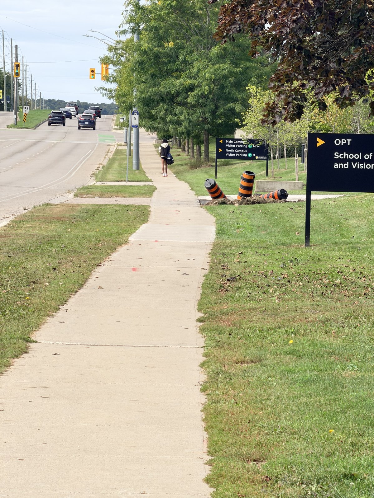
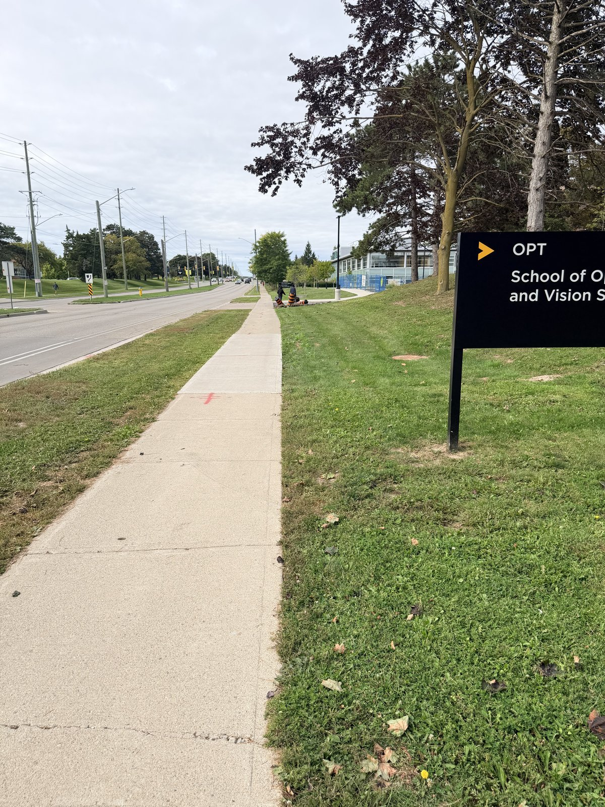
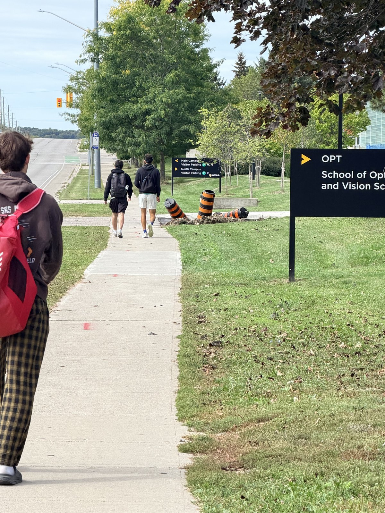
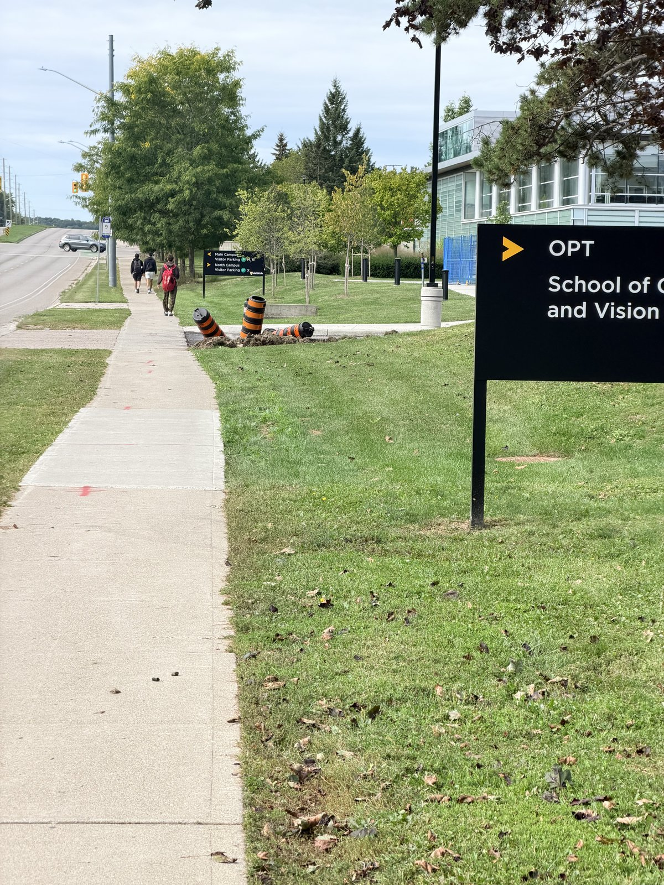

Architectural perspective compression
The street
folds inward.
One path, four camera positions. A distant zoomed view and a closer wide view make the space between familiar landmarks feel surprisingly different.
Walk forward. Zoom out. Look again.
A / The comparison
Far zoom / Near wide
Follow the sidewalk, trees, and roadside sign through both frames.


The sign near the right edge anchors the comparison. In the farther view, the sidewalk, trees, and road appear crowded together. From closer up, the foreground sidewalk spreads outward and the route into the distance feels longer.
B / The walk
Four positions, one path
Captured in this order while moving along the sidewalk.


The 35 mm equivalent focal lengths above are the exact values in the original HEIC metadata. Camera-to-landmark distances were not measured. A passerby appears in one frame; compare the fixed features of the street instead.
As the camera advances and the field of view widens, nearby parts of the path change size more strongly than distant parts.
C / Why the depth changes
Distance reshapes
the street.
In the first frame, the camera is farther from the scene. The difference between its distance to a nearer tree or sign and its distance to a farther one is relatively small. Their apparent sizes become more similar, making the background feel closer to the foreground.
Walking forward increases that relative distance difference. Nearby sidewalk sections and roadside objects grow faster in the frame than distant ones. Zooming out to a wider view keeps the scene comparable, but the change in camera position creates the new perspective. Zoom alone, from a fixed spot, would only change the crop.
Adjust zoom to frame the scene.
The same path can feel like a different place.